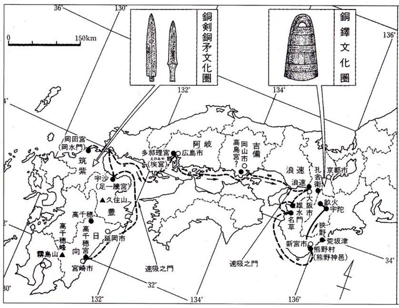
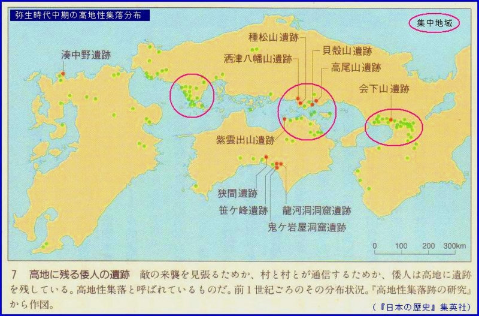

『古代からの伝言 日本建国』
公開日：
角川の Kindle セールで全巻大人買い。1週間ぐらいで7冊読み切った。ここに書かれていることの正否はわからないが、とても読みやすく、面白かった。割とお勧めできると思う。
")
- 作者: 八木荘司
- 出版社/メーカー: 角川書店
- 発売日: 2007/01
- メディア: 文庫
- クリック: 7回
- この商品を含むブログ (1件) を見る
邪馬台国と神武天皇の神話。
この当時の日本の重要性を考えるにあたって、人口の大きさを大まかに把握しておくのは大事なことだと思う。
- 魏：450万人
- 呉：230万人
- 蜀：94万人
- 燕（公孫淵が魏に反旗を翻して建国した国）：30万人
- 邪馬台国：50万人
- 邪馬台国（傘下の国を含む）：120万人
三国については戸籍に載っている数だけで、実数はもうちょっと多いかもしれませんし、邪馬台国については過大評価されている可能性もあるのですが、だいたの規模感はつかめるかも。
とくに呉は国土の割に人口が少なく（江南の人口が増えたのは、華北が異民族の侵入で乱れ、華南への人口移動が起こった東晋時代以降のことです）、日本にちょっかいをかけたくなるのもうなずける感じ。魏としては、日本が呉に組することだけは絶対に阻止せねばなりません。そのため、邪馬台国を西の新魏大月氏王と並ぶ親魏倭王に封じ、新羅などのように属国扱いせず、友邦という扱いになっています（それでも遠くから貢物を持ってきたみたいな扱いですけど）。
ちなみに、朝鮮半島の人口はこんな感じだったよう（推計）。
- 高句麗：25万人
- 新羅：15万人
- 百済：30万人
朝鮮半島は想像より人口がまばらで、とくに任那地方は小国乱立って感じだったようですね。だから日本（倭）が手を出せたというのがあるのでしょうけれど。
んで、神武東征。
本書の特徴は、神武天皇の東征神話を真っ向から否定せず、とりあえずウソ入ってないと仮定して話を進めている点。まぁ、シュリーマンがトロイみつけたり、亀甲から殷王朝が実証されたりっていう話もあるしね。なんでもウソって決めつけて話を進めても仕方ないよね。
そうなると問題になるのが、初期の天皇の寿命がやたら長いこと。たとえば神武天皇は127歳まで生きている。どういうことや。
そこで本書が採るのが、倍年説。
決定的とは認知されていない説だが、『魏略』には現在の半年を当時の日本が一年として数えていたという『倍年説』を基に歴史を再計算しその結果、神武天皇の即位は西暦181年であり、寿命は127歳の半分の63歳であったと主張している。これに伴い、神武天皇以後の歴代天皇の寿命や在位期間も半分となる
確かにこれをとれば、
- 歴代天皇の没年が常識的な範囲内で収まる
- 魏志にある“倭国大乱”がちょうど神武東征の時期にあたる
- 日本各地にみられる 高地性集落 - Wikipedia の時期と神武東征の時期が重なるため、これらが神武東征から身を避けるためではなかったかと推論できる


（でも、なんで高知にまであるの？）
- 邪馬台国と対立していた狗奴国（邪馬台国の南にあったという）を熊野から来た神武天皇の国に比定することができそう
と、いろいろ話のつじつまが合う。とはいえ、これでこの説が正しいと言えるわけではない。たとえば「じゃぁ、いつから倍年やめたの？」って聞かれても答えられないし。でも、一つの説としては有力なのかもしれない。
あと、卑弥呼の死後、男王を立てたけれど国が治まらなかったのに、13歳の壱与を王に建てたところ平和になったっていうエピソードは昔から好き。卑弥呼、壱与に限らず、古代の日本は女性の統治者が割かしいて、しかも重要な役割を演じている（神功皇后、推古天皇、持統天皇などなど）のって、ちょっと面白いよね。
")
- 作者: 八木荘司
- 出版社/メーカー: 角川書店
- 発売日: 2006/12/22
- メディア: 文庫
- クリック: 2回
- この商品を含むブログを見る
")
- 作者: 八木荘司
- 出版社/メーカー: 角川書店
- 発売日: 2006/11
- メディア: 文庫
- クリック: 3回
- この商品を含むブログを見る
")
- 作者: 八木荘司
- 出版社/メーカー: 角川書店
- 発売日: 2006/09/22
- メディア: 文庫
- クリック: 1回
- この商品を含むブログ (3件) を見る
")
- 作者: 八木荘司
- 出版社/メーカー: 角川書店
- 発売日: 2006/09/22
- メディア: 文庫
- 購入: 1人 クリック: 6回
- この商品を含むブログ (3件) を見る
")
- 作者: 八木荘司
- 出版社/メーカー: 角川書店
- 発売日: 2007/02
- メディア: 文庫
- 購入: 1人 クリック: 5回
- この商品を含むブログ (2件) を見る
")
- 作者: 八木荘司
- 出版社/メーカー: 角川書店
- 発売日: 2007/03
- メディア: 文庫
- この商品を含むブログを見る
全巻まとめていろいろ書くつもりだったけど、艦これのイベントで忙しいから、やっぱり小分けにしてちびちび書くことにする。